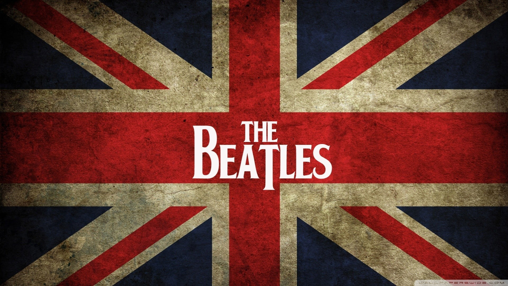
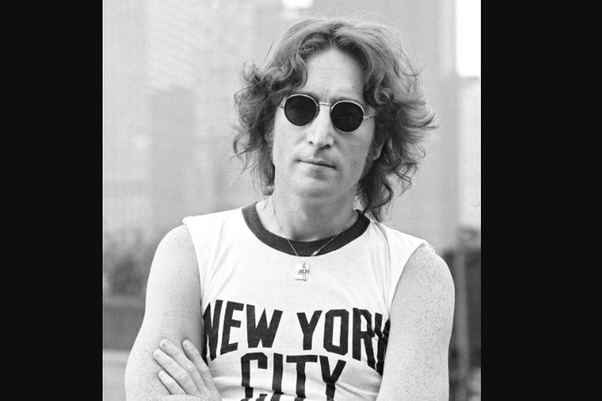
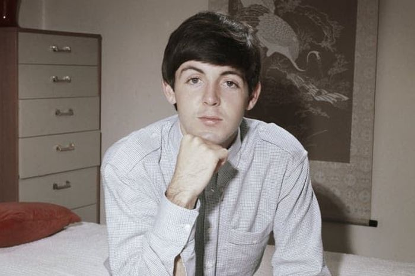
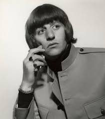

The Beatles
Welcome
The Beatles adalah kelompok pemusik Inggris beraliran rock, dibentuk di Liverpool pada tahun 1960, sering kali dianggap sebagai pemusik tersukses secara komersial dan paling banyak mendapat pujian dalam musik populer. Sejak tahun 1962, kelompok ini terdiri dari John Lennon (gitar pengiring, vokal), Paul McCartney (gitar bass, vokal), George Harrison (gitar melodi, vokal), Ringo Starr (drum, vokal). Bermula dari aliran skiffle dan rock and roll 1950-an, kelompok ini nantinya memainkan musik dalam berbagai genre mulai dari folk rock sampai rock psikedelik, memasukkan juga unsur musik klasik dan elemen lain dengan cara inovatif. The Beatles dipandang sebagai perwujudan ide-ide progresif, berpengaruh terhadap revolusi sosial budaya pada dekade 60-an.
John Lennon
Bernama Lengkap John Winston Lennon, ia lahir di Liverpool, Inggris, 9 Oktober 1940 dan wafat di New York City, Amerika Serikat, 8 Desember 1980 pada umur 40 tahun. Ia paling dikenal sebagai penyanyi, pencipta lagu, instrumentalis, penulis, dan aktivis politik yang terkenal di seluruh dunia sebagai pemimpin dari The Beatles. Lennon dan Paul McCartney membentuk partnership pencipta lagu yang paling sukses dan berhasil hingga saat ini. Lennon dengan sinismenya dan mcCartney dengan optimismenya melengkapi satu sama lain dengan sangat baik.
Paul McCartney
Paul McCartney (lahir 18 Juni 1942) adalah seorang penyanyi / penulis lagu Inggris dan anggota kunci The Beatles. Setelah The Beatles berpisah pada tahun 1970, ia mengejar karier solonya yang sukses, merekam dengan berbagai artis, termasuk grupnya ‘The Wings’. Menurut Guinness Book of Records, ia adalah artis terlaris sepanjang masa.
George Harrison
George Harrison MBE (lahir di Wavertree, Liverpool, Inggris, 25 Februari 1943 – meninggal di Los Angeles, Kalifornia, Amerika Serikat, 29 November 2001 pada umur 58 tahun) adalah musisi, penyanyi, penulis lagu dan produser film Britania Raya. Beliau paling dikenal sebagai gitaris grup musik The Beatles.
Ringo Starr
Sir Richard Starkey, MBE (lahir 7 Juli 1940), dikenal dengan nama panggungnya Ringo Starr, adalah musikus terkenal dari Britania Raya, paling populer sebagai drummer The Beatles. Ia bergabung dengan The Beatles pada tahun 1962. Sebagai seorang drummer, Starr dikenal kreatif, dan kontribusinya pada band mendapat pujian dari banyak drummer profresional. Tahun 2011, ia mendapat peringkat kelima dalam polling Rolling Stones untuk 100 drummer terbaik sepanjang masa.
Profile
|
Nama : Muhammad Riskal Fadhilla |


4 Greatest The Beatles Songs
Hey jude
View Lyrics
Hey Jude, don't make it bad.
Take a sad song and make it better.
Remember to let her into your heart,
Then you can start to make it better.
Hey Jude, don't be afraid.
You were made to go out and get her.
The minute you let her under your skin,
Then you begin to make it better.
And anytime you feel the pain, hey Jude, refrain,
Don't carry the world upon your shoulders.
For well you know that it's a fool who plays it cool
By making his world a little colder.
Hey Jude, don't let me down.
You have found her, now go and get her.
Remember to let her into your heart,
Then you can start to make it better.
So let it out and let it in, hey Jude, begin,
You're waiting for someone to perform with.
And don't you know that it's just you, hey Jude, you'll do,
The movement you need is on your shoulder.
Hey Jude, don't make it bad.
Take a sad song and make it better.
Remember to let her under your skin,
Then you'll begin to make it
Better better better better better better, oh.
Na na na nananana, nannana, hey Jude...
Yesterday
View Lyrics
Yesterday
All my troubles seemed so far away
Now it looks as though they're here to stay
Oh, I believe in yesterday
Suddenly
I'm not half the man I used to be
There's a shadow hanging over me
Oh, yesterday came suddenly
Why she had to go
I don't know, she wouldn't say
I said something wrong
Now I long for yesterday
Yesterday
Love was such an easy game to play
Now I need a place to hide away
Oh, I believe in yesterday
Why she had to go
I don't know, she wouldn't say
I said something wrong
Now I long for yesterday
Yesterday
Love was such an easy game to play
Now I need a place to hide away
Oh, I believe in yesterday
Mmm-mmm-mmm-mmm-mmm, hmm-hmm.
Let it be
View Lyrics
When I find myself in times of trouble, Mother Mary comes to me
Speaking words of wisdom, let it be
And in my hour of darkness she is standing right in front of me
Speaking words of wisdom, let it be
Let it be, let it be, let it be, let it be
Whisper words of wisdom, let it be
And when the broken hearted people living in the world agree
There will be an answer, let it be
For though they may be parted, there is still a chance that they will see
There will be an answer, let it be
Let it be, let it be, let it be, let it be
There will be an answer, let it be
Let it be, let it be, let it be, let it be
Whisper words of wisdom, let it be
Let it be, let it be, let it be, let it be
Whisper words of wisdom, let it be, be
And when the night is cloudy there is still a light that shines on me
Shinin' until tomorrow, let it be
I wake up to the sound of music, Mother Mary comes to me
Speaking words of wisdom, let it be
And let it be, let it be, let it be, let it be
Whisper words of wisdom, let it be
And let it be, let it be, let it be, let it be
Whisper words of wisdom, let it be.
ob-la-di, ob-la-da
View Lyrics
Desmond has a barrow in the marketplace
Molly is the singer in a band
Desmond says to Molly, "Girl, I like your face"
And Molly says this as she takes him by the hand
Ob-la-di, ob-la-da
Life goes on, brah
La, la, how the life goes on
Ob-la-di, ob-la-da
Life goes on, brah
La, la, how the life goes on
Desmond takes a trolley to the jeweler's store
Buys a 20 carat golden ring (ring)
Takes it back to Molly waiting at the door
And as he gives it to her, she begins to sing (sing)
Ob-la-di, ob-la-da (la, la, la, la, la, la)
Life goes on, brah (la, la, la, la, la, la)
La, la, how the life goes on
Ob-la-di, ob-la-da (la, la, la, la, la, la)
Life goes on, brah (la, la, la, la, la, la)
La, la, how the life goes on (yeah)
In a couple of years
They have built a home, sweet home
With a couple of kids running in the yard
Of Desmond and Molly Jones (ha-ha-ha-ha-ha-ha)
Happy ever after in the market place
Desmond lets the children lend a hand (arm, leg)
Molly stays at home and does her pretty face
And in the evening, she still sings it with the band (yes)
Ob-la-di, ob-la-da
Life goes on, brah
La, la, how the life goes on (hey)
Ob-la-di, ob-la-da
Life goes on, brah
La, la, how the life goes on
In a couple of years
They have built a home, sweet home
With a couple of kids running in the yard
Of Desmond and Molly Jones (hey)
Happy ever after in the market place
Molly lets the children lend a hand
Desmond stays at home and does his pretty face
And in the evening, she's a singer with the band (yeah)
Ob-la-di, ob-la-da
Life goes on, brah
La, la, how the life goes on (hey)
Ob-la-di, ob-la-da
Life goes on, brah
La, la, how the life goes on
And if you want some fun
Take Ob-la-di-bla-da
Thank you.